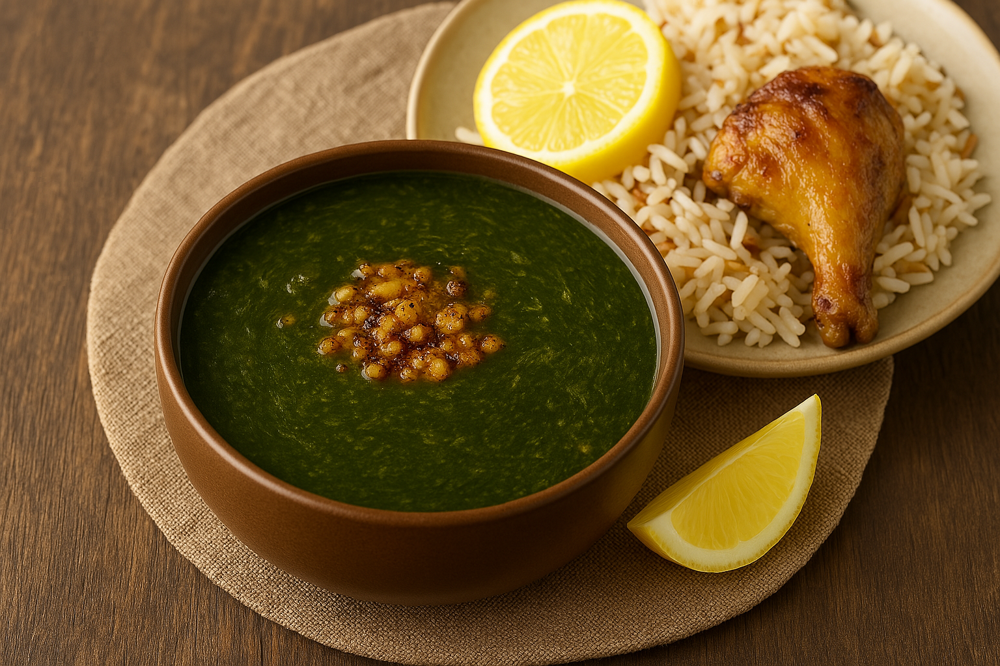

Molokhia

description:
Molokhia is a green, garlicky stew made from jute mallow leaves simmered
in a savory broth. It’s known for its unique texture and deep flavor,
often enhanced with a sizzling garlic-coriander mixture called
ta’leyata’leya.
ingredients
- 2 packs frozen minced molokhia (about 800)
- 4 cups chicken broth
- 6-8 garlic cloves, minced
- 1 tablespoon ground coriander
- 2 tablespoon butter or ghee
- salt and black pepper to taste
- juice of half a lemon
- cooked chicken or rabbit
- white rice or Egyptian rice
steps:
- prepare the broth: in a pot, bring your borth to a gentle simmer.
- Add molokhia: drop the frozen molokhia into the broth.stir occationally until fully melted and incorporated. Do not let it boil-just a gentle simmer
- make the ta'leya: in a seperated pan heat butter or ghee. Add minced garlic and coriander. sauté until golden and fragrant
- combine: pour the ta'leya into the molokhia pot
- Season: Add salt, pepper, and lemon juice to taste.Simmer for a few more minutes, then turn of the heat
- Serve:: ladle over rice and top with your protein of choice
home page